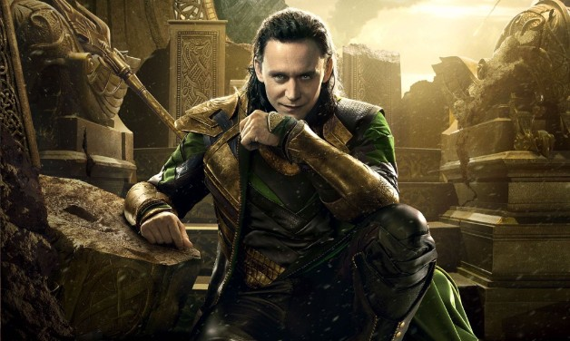

James “Rhodey” Rhodes, has been a marine, a pilot. Tony Stark best friend, and one of a just handful of heroes to wear Iron Man armor. But deep down, Iron Man is a super heroes. And Rhodey is a Soldier. So when the forgotten victims of the world need a kind of help that only soldier can provide, Rhodey dons his own suit of armor — and claims the power and responsibility of an entire army!
Rhodey/War Machine karakter yang tergambar dalam komik ini merupakan sosok ‘Soldier’ yang sebenarnya. Idealisme yang tanpa ragu ia terapkan dengan konsep ‘right is right and wrong is wrong’. Tidak ada istilah abu2 dalam karakternya. Semua keputusan yang ia ambil, ia tanggung akibatnya, mulai dari dipenjara ketika remaja karena menentang rasisme, hingga membumi hanguskan pangkalan2 militer amerika karena percobaan2 ilegal pada manusia walau akibatnya adalah tubuhnya sendiri. Tubuh Rodey hancur dalam mempertahankan keyakinannya, digantikan oleh ‘old school’ cyborg implant. Namun hal ini tidak menyurutkan idealisme Rhodey, hingga akhirnya ia pun dapat dikatakan mati (body and mind).
Semua perbuatan yang dilakukan oleh Rhodey dikalkulasi secara rinci seperti ahli perang sesungguhnya, konsekuensi yang terjadi, ia tanggung semuanya bahkan jika ia mati karena harus membantai orang. Jika ia harus membumi hanguskan Amerika *yang notabene adalah kampung halamannya* untuk menanggulangi kesalahan yang Amerika lakukan, maka Rhodey tidak segan2 melakukannya. Dalam hal ini, tokoh Rhodey adalah anti thesis dari stereotip american patriot.
Rhodey adalah tokoh yang hidup dengan pedoman ‘sekarang’ ia berperan sebagai ‘judge’ dan ‘juri’ atas apa yang terjadi di dunia ini. Ketika masyarakat dunia bergerak mengambil keputusan yang abu2. Dimana rasisme terjadi, korupsi merajalela, genosida terjadi akibat keputusan abu2, namun tidak bagi War Machine. Baginya hanya ada hitam dan putih dan humanity adalah kitab sucinya.